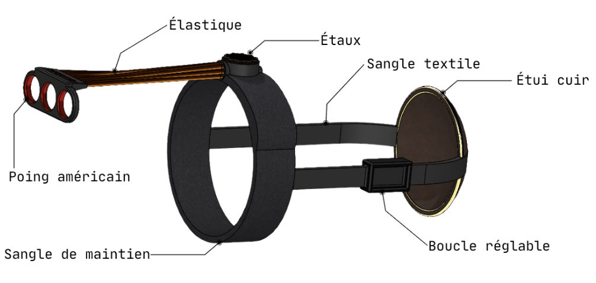
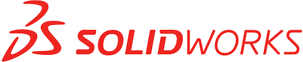

Projets
Mes projets

Projet M1 : MOBILIS device
Conception et validation biomécanique d’un dispositif médical modulaire pour la rééducation autonome du poignet, intégrant assistance et résistance élastique.
Conception 3D / impression 3D
Biomécanique
Analyse EMG et cinématique
Projet Loisir : Modélisation 3D avec Blender
Création de modèles 3D réalistes avec Blender pour des projets de design et d'animation.
Blender
3D Modeling
Animation



Projet Loisir : Modélisation CAO avec SolidWorks
Création de pièces mécaniques réalistes avec SolidWorks pour des projets de conception et d'ingénierie.
SolidWorks
CAO
Mécanique